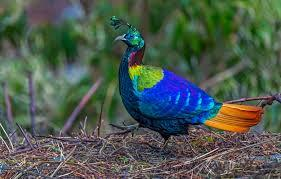
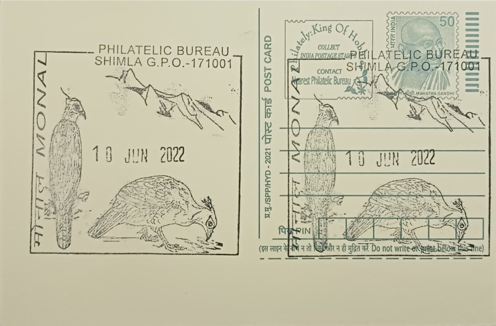

The Himalayan Monal carries the scientific name Lophophorus impejanus, a binomial that itself tells a small piece of colonial-era natural history: "Lophophorus" derives from the Greek for crest-bearer, while "impejanus" honours Lady Mary Impey, wife of Sir Elijah Impey, Chief Justice of Bengal in the 1770s, who kept a menagerie of Indian birds at her Calcutta residence and attempted to breed the species in captivity. Locally across Himachal Pradesh and the wider western Himalaya it is known simply as Monal, while in Nepal it is called Danphe, the name under which it also appears in Nepali oral tradition and heraldry.
As a species, the Himalayan Monal belongs to the pheasant family Phasianidae and occupies a distinct place among Himalayan fauna as one of the most visually striking galliformes anywhere in the world. It has been adopted as the state bird of both Himachal Pradesh and Uttarakhand, and separately holds the status of national bird of Nepal, an unusual triple distinction that reflects its wide range across the Himalayan arc from Afghanistan through India, Nepal, Bhutan and into Tibet. The IUCN currently lists it as a species of Least Concern, though regional surveys in Himachal Pradesh have recorded steep long-term declines in local populations, lending conservation weight to what is otherwise a culturally celebratory symbol.
The male Monal is markedly larger and more ornamented than the female, displaying a body length of roughly 70 centimetres and iridescent plumage that shifts through metallic green, purple, copper and blue depending on the angle of light, set off by a wispy wire-like crest and a white rump patch visible in flight; the female, by contrast, is a mottled brown bird whose camouflage suits her role of incubating three to six eggs in a ground scrape during the April-to-August breeding season. The species favours upper temperate and subalpine forests of oak, fir and rhododendron interspersed with open grassy slopes, generally between 2,400 and 4,500 metres, descending somewhat lower in winter snow, and forages by digging with its strong, curved bill and claws for tubers, roots, seeds and invertebrates, sometimes turning over soil to depths of 20 to 25 centimetres.
A notable behavioural feature is the male's courtship display, performed on exposed rocks or grassy knolls at dawn, in which he fans his short tail, bobs his head and struts in tight semicircles around the female while calling loudly, a spectacle that has made the bird a favourite subject for wildlife photographers in parks such as the Great Himalayan National Park in Kullu district. The species is protected under Schedule I of India's Wildlife (Protection) Act, 1972, the strictest tier of legal protection, a status made necessary by historic and ongoing poaching pressure for its plumage, which was long prized for adornment including regimental and ceremonial headgear during the colonial period.
In present-day Himachal Pradesh, the Monal is a recurring emblem in state government insignia, tourism promotion and forest department conservation messaging, and sightings are actively promoted in high-altitude reserves including the Great Himalayan National Park and areas around the Kullu and Kinnaur ranges, where forest staff and eco-tourism guides monitor its numbers alongside other Schedule I pheasants such as the western tragopan. The postal circle of Shimla, whose GPO pictorial cancellation bears the bird's likeness, situates the design within this broader regional identity, linking a routine postal marking to a species that Himachal Pradesh has otherwise chosen as one of its most recognisable natural symbols.
| Date of Introduction | May 28, 2004 |
|---|---|
| Address | Incharge, |
| Philatelic Bureau, Shimla GPO-PB, | |
| Shimla (dt.), Himachal Pradesh - 171001. |